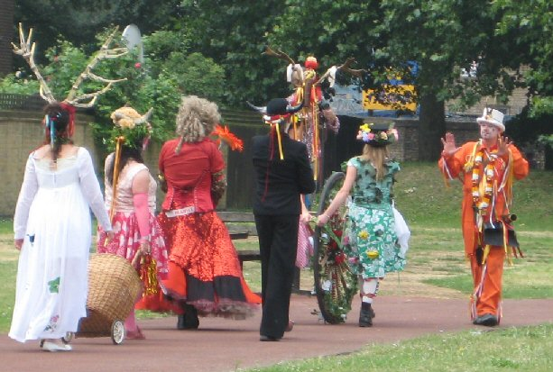
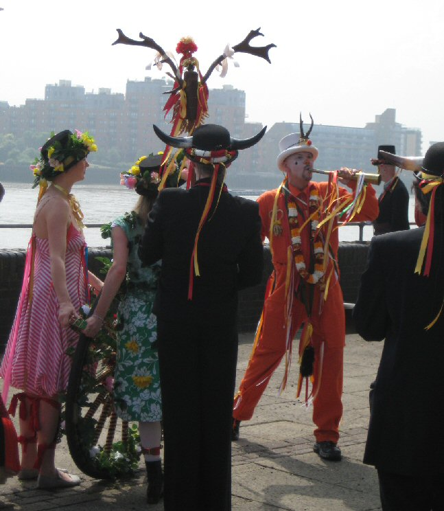

Sunday, June the 28th, 2009
back to: title, date or indexes
Rediscovered Urban Rituals, who helped to organise a May Day Jack in the Green procession in Deptford in 2006, recreated the famous Charlton Horn Fair procession today.
The Abbot of Bermondsey granted a charter in 1268 for an annual fair to be held at Charlton, which was eventually banned in 1872 for ‘licentious conduct’. The celebrants dressed up in drag and adorned themselves with horns and masks, presumably evoking ancient ritual & fertility symbolism. The procession of ‘Hornified Fumblers' traditionally met at Cuckold's Point in Rotherhithe, after crossing the Thames from the City. They paraded through Deptford and Greenwich and on to the Fair.
What better way for Mr Key to spend his Sunday morning than to trail in the procession's wake, albeit dressed in mufti?


Snapper : Pansy Cradledew Photographic Interventions GmbH. Mezzotints of the snaps will be made available in the fullness of time.